Classroom of the Elite
Notas y pleanteamientos
Notas 01/2025 - Volumen Actual: Volumen 3 Y3
Agradecimientos
Antes comenzar cualquier disertación, decir y dejar en claro mi mas grande y eterna gratitud al grupo ReversiBlog . Por todas las traducciones de esta obra que amo tanto, decir que aunque no todo el contenido de este grupo es de mi agrado los sigo y los conozco por traducciones que también leeo como Kuso onna ni sachiare o Boku no Suki na Hito ga Suki n, por ejemplo no soy muy fan de toda traduccion que ellos hacen, pero en alguna ocasion como avido lector de romance me ha gustado alguna que otra aportación.
Notas Preliminares
Soy lector de esta obra desde hace aproximadamente 5 años (contando el nuevo año vigente); leo COTE desde hace aproximadamente, si no mal recuerdo, de entre finales de 2019 a principios de 2020.
En ese entonces avancé hasta el volumen 8, hice un parón y meses después retomé la obra. Entre 2021 y 2022 fue donde más consumí cote, hasta determinado punto de hacer una pausa de casi un año. Y tener que recuperar el ritmo de la obra. Teniendo en cuenta el año de publicación de la obra, al menos dentro de la comunidad hispanohablante (en la cual raramente se habla de novelas ligeras). Soy un lector relativamente viejo, tomando en cuenta que leí la obra prácticamente cuando estaba terminando el primer año.
No fue sino cerca de estos últimos años que la popularidad de esta obra llegó a un punto de inflexión, tomando en cuenta que actualmente se le están adaptando varios volúmenes a anime. Además, han remodelado su versión manga; esto no es casualidad, y es que al menos cerca de entre 2022 a 2023 la obra fue tomando más popularidad hasta el punto que en redes sociales había incluso personas hispanohablantes dando su opinión sobre la novela ligera.
Como lector desde hace años, me he tomado el tiempo no solo de leer la obra, sino de analizarla volumen tras volumen, sacando conclusiones nuevas por cada arco culminado. Sin embargo, el reciente auge ha expuesto una preocupación que ya hace tiempo me tenía en ascuas. No solo tengo que soportar ver cómo los propios fanáticos de la obra degradan dicha obra a monigotes genéricos y clichés literarios (memes, mofas, ridiculizaciones, etc..) de, entre otras cosas, sobre los sucesos acontecidos desde el 1º volumen del 2º Año hasta la actualidad.
Lo cierto es que esta amalgama incesante de lectores que poco o nada analizan hace rebajar a la obra a una burla auto-insertiva morbosa y poco creativa.
Esto es únicamente culpa de los lectores, la cantidad de "opiniones" que solo se sustentan en querer de manera acrítica rebajar toda la inteligencia en la cual se implica el autor. El maestro Shōgo Kinugasa, cuyo talento admiro y respeto, por más que, a pesar de todo, no es COTE mi obra predilecta ni la considere una obra magna, pero reducir todo este trabajo a una vil burla malintencionada sería de las cosas más ruines que alguien puede hacer.
Sin más que decir, el propósito de este post es reunir mis notas y mis pensamientos completos de la obra en general ahora que tengo todo fresco. Una vez todo escrito y fundamentado, iré dando actualizaciones sobre los volúmenes siguientes: agregando, ajustando comentarios e incluso, cómo no, retractándome de posibles teorías.
Antes de continuar, dejar en claro que mi introducción tiene la única intención de dejar en claro que he pasado años viendo a la comunidad de COTE (comunidad que no me simpatiza). Con la cual no solo es que tenga mis diferencias, sino que incluso, con el pasar de los volúmenes, más se evidencia que desde el volumen de segundo año los fanáticos comenzaron a perder el interés por la obra en el momento en el que el protagonista dejó de ser esa figura de proyecciones psicológicas en las cuales muchos fanáticos se auto-insertaban.
Decir que la trayectoria actual de la obra es ambigua o que repite clichés muy clásicos de obras niponas (harems, heroínas, etc...) es evidenciar que no se da una lectura atenta. Y la complejidad de Kinugasa no es tanta; solo exige un poco de atención a los diálogos, una breve reflexión sobre los monólogos iniciales, sobre las historias cortas, los detalles en las escenas, etc. Muchas veces la prospección de Kinugasa es tal, que es hasta grosero declarar que al lector no se le otorgaron las piezas necesarias para saber cómo se iba a desenvolver un evento en esta obra.
Dicho pues, toca redactar párrafos de argumentos y sustentos sólidos que prueben mi completo desdén por los fanáticos, que plasmen mi amor por esta obra y que, a su vez, dejen en clara mi postura con respecto a esta.
Recopilacion de Planteamientos
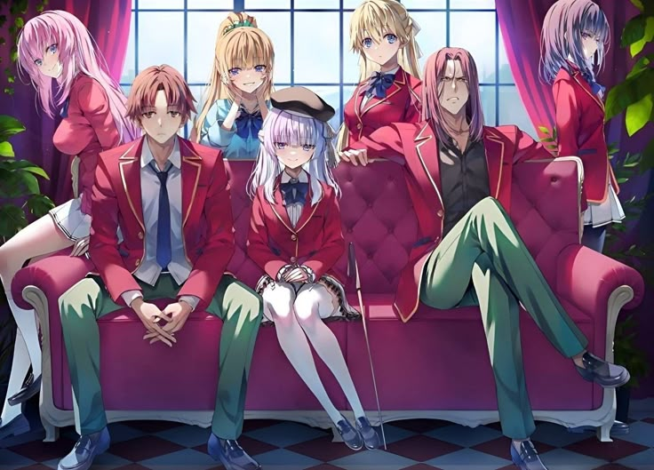
Fundamentos
Abordar lógicamente 25 volúmenes es una barbaridad, pero me siento capacitado. Entre otras cosas, porque hablo con un amigo sobre COTE cada volumen nuevo. Gracias a estas últimas publicaciones, pude recordar varios detalles, problemáticas, planteamientos, premisas e ideas generales que nos han llevado a los acontecimientos que están ocurriendo hoy, a fecha en la que escribo esto: 01/2026, y cuyo último volumen salió el 25 de noviembre de 2025, hace escasos meses.
Para organizar toda esta temática, vamos a estructurar una tabla de contenido en la cual indexaremos punto por punto todo el planteamiento que busco realizar con este post, a manera de reseña y crítica. Esto nos permitirá, de manera paulatina y seria, abordar la mayor cantidad de puntos posibles en el menor y más conciso número de párrafos que tendré que redactar.
| Volumen de 1rº Año | |
| 1. La figura del protagonista | |
| 2. Analisis General de los puntos Base | |
| 3. Disertación concisa sobre determinados prejuicios | |
| 4. Direccion de Antaño, personajes y volumenes clave | |
| Volumen de 2nº Año | |
| 1. La prospeccion general del contexto socio-político (Cronotopo-Externo) | |
| 2. La prospeccion general del contexto socio-político (Cronotopo-Interno) | |
| 3. La figura de la White Room y la disertación de Ayanokouji | |
| 4. Disertación concisa sobre determinados acontecimientos y personajes | |
| Volumen de 3rº Año | |
| 1. Comentarios generales y retrospectivas a determinados acontecimientos | |
| 2. Comentarios puntuales sobre la direccion actual y meta de Kinugasa | |
| Desarollo de una Teoria | |
| 1. La convergencia de los escenarios | |
| 2. Las piezas clave y los caminos trazados | |
| 3. Pronostico | |
| Reseña General | |
| 1. Comentarios generales de la obra hasta la actualidad | |
| 2. Comentarios generales sobre sobre todo lo discernido | |
Volumen de 1º Año
La figura del protagonista
Desajuste tecnico
Para comenzar esta amalgama de disertaciones conjuntas comenzaremos con la polémica, casi siempre tema de debate, la figura del protagonista Kiyotaka Ayanokōji.
Entre otros comentarios, o al menos él más reconocible lógicamente se encuentra entre los encasillamientos internautas que jibarizan de manera obscena (cuasi de manera grotesca) los tropos, monigotes, y clichés literarios convertidos en circo de comodines a-críticos.
“Plot Armor, Gary/Mary stu/sue, guionazos” y entre otros términos que solo se utilizan a modo de meme prácticamente en cualquier comentario dirigido a cualquier obra anime manga, términos de hecho originalmente diseñados y refrito hasta el hartazgo de quienes repiten esquemas y tropos o moldes para de alguna manera sustituir el análisis a una vil burla de sí misma.
A esto le sumas un grupo de fanáticos psicológicamente inestables los cuales en épocas doradas de la obra en su primera temporada donde cuya única relevancia por la se recuerda es lógicamente la última escena en la que Ayanokōji revela su “auténtica naturaleza”, y tienes servido en bandeja de plata los planteamientos necesarios para que de rienda suelta a un grupo de fanáticos completamente desconectados del hilo general de las cosas (Pues su mayor interés se reduce única y exclusivamente con quien mantiene relaciones nuestro protagonista o a quien aplastara en próximos enfrentamientos).
La forma primera en la que las personas reducen a Kiyotaka a una especie de tropo o burla mal hecha en cierto modo es también culpa no solo de la crítica internauta jibarizada, sino en parte por la producción y la adaptación de la obra a los diferentes formatos. De hecho, quien haya al menos dedicado el tiempo de ver por encima su anime, manga(hablo de anteriores adaptaciones y no de la actual) y la novela, podrá notar no un cambio drástico en el protagonista, sino más bien un oxímoron hecho personaje.

En obras adaptadas como el “manga de horkita” o “COTE” dibujadas por Ichino Yuyu encuadran a la perfección el problema que hay con adaptar a Ayanokouji, también se vislumbra en el anime de la primera temporada. Analizando estas 3 adaptaciones uno se da cuenta que el principal problema es no saber como escenificar de manera consistente y coherente un protagonista tan serio como inocente.
1 Porque Ayano no es ni tan serio y frio como lo pinta el anime ni tan bromista y jugueton como el manga adaptado de ichino Yuyu.
Hablando de manera tajante una adaptación como la de ichino Yuyu es de hecho una acertada hasta cierto punto porque el protagonista no es expresivo en lo absoluta, pero eso no significa que carezca por completo de emotividad humana alguna, en la novela se nos ejemplifica de manera clara y continua que el protagonista es bromista de hecho, más de una ocasión ha mostrado esas facetas de manera general y no se ha comportado como lo ha hecho el del anime.
Este pequeño desajuste puede entre otras cosas sumar a una cantidad de malentendidos sobre el protagonista, sus intenciones, sus miedos, sus inquietudes, sus propósitos y relegan a Ayankouji como una insulsa masa mórbida de incoherencias y atisbos poco claros de lo que es, quiere o busca e intenta conseguir.
Ayanokouji Kiyotaka
Para inducir una lectura completa de nuestro protagonista, me remitiré por completo a las novelas ligeras, la cual al menos en principio mantuvo el misticismo del personaje en los 3 primeros volúmenes desde los sucesos primeros del giro de la clase D (con esto me refiero al acontecimiento de como la clase D se enteró del sistema de puntos privados y se quedaron sin puntos) hasta el primer examen de la isla deshabitada.
El ayankouji presentado, si bien presentaba en principio ambigüedad con respectos como el lector se introduce en su perspectiva, da un giro completamente brusco desde su revelación de su faceta “natural”.
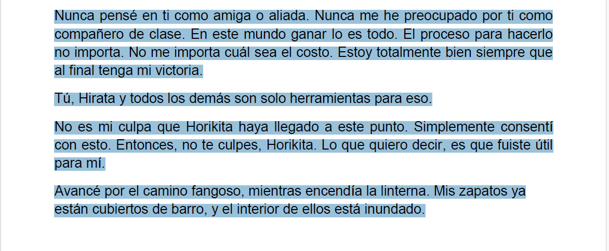
En el anime se revela cuando el examen finaliza y cierra la temporada, en la novela transcurre minutos antes de Ayano ejecutara la idea que lo llevaría a ganar ese examen entre bastidores. El volumen 3 se resalta entre otras cosas por una analogía que pesa en la etapa inicial de Ayano y esque Chasibara retracta muy bien la peculiar figura que representa Ayano para el Mundo.
La comparación con el mito de Ícaro presentada como monologo al principio del Volumen 3 (Escena presentada en el anime, de hecho, y a mi parecer de las pocas cosas que rescato de la adaptación) es un recurso muy interesante para representar la fase inicial en la que Ayano se encuentra, por un lado, ingresa a la “Preparatorioa Metropolitana de Educación Avanzada” (recordemos que es una institución resguardada por Sakayanagi) con el proposito de una vida común y tranquila, en efecto, y para ello Ayano ingreso al quizas peor entorno en el que ocultar sus habilidades, puesto de que ellas el puede vivir.
Sin desempeño no puede ganar puntos privados, sin puntos de classe no puede ascender, y no seria tan malo si solo se centrara en lo primero, hasta que llego el chantaje de Chasibara y arruino sus planes.
Ayano desde el Volumen 4-3 a 8 actúa en rigor del chantaje de Chasibara, por un lado, Ayano no puede vivir en paz porque debe actuar en los exámenes, despertando interés de los enemigos de clase, obligándolo lentamente a desenmascarar facetas que oculta, lógicamente sus maniobras no pasa desapercibido y lentamente va cobrando un renombre.
Horikita, Hirata, Manabu,Kushida, Ryuen en ese orden, sin contar por ejemplo a Koenji que por ahora lo dejaremos como tema aparte e ignorando también a Sakayanagi que por relaciones parentales sabe de la existencia de la White Room y sobre Kouji, seguido de Ichinose. Lentamente, Ayankouji lo quiera o no desarrolla una buena opinión de las personas como alguien capaz de ejercer drásticos giros a las cosas, pero al menos hasta el volumen 11.5 el objetivo de Ayano fue lentamente transformado en otro. Si bien se presenta como una persona completamente apática e indiferente al principio, él lucha progresivamente y de hecho participa activamente en involucrarse con los de la clase (Recordemos los episodios de piscina, las quedadas con Kei, las salidas del grupo “Ayanokouji”...).
Ayano desde sus inicios hasta que consiguió un grupo de amigos y novia, no dejo ni por un segundo en involucrarse con los demás. Esto contradice de primera mano el estatuto netamente capitalista por el cual se rige su existencia completa siendo un producto completamente defectuoso (Recordemos la conversación que tuvo Chasibara con Horikita) en el Anime este estatuto va hacia el extremo, casi como si el personaje fuera en si mismo un protagonista predefinido el cual no le interesa cambiar ni desarrollar nada y presuponerse soberano, aquí la diferencia clave entre la novela manga y anime.
La novela resalta de manera activa y constante la necesidad de Ayano con mezclarse con los otros continuamente, esta actitud se ve difuminada por completo en el anime, mostrando de manera rimbombante tal y como si esta faceta fuera unidimensional (Como si el protagonista solo tuviera apatía e indiferencia por lo que dice hace o pretende hacer) pero esto al menos lentamente se va dejando de lado por no solo como avanza sus interacciones continuamente (Lentamente tiene más interacción con su entorno) sino que hay escenas clave que ejemplifican de manera consistente la coherencia de Kouji.
La revelación de X
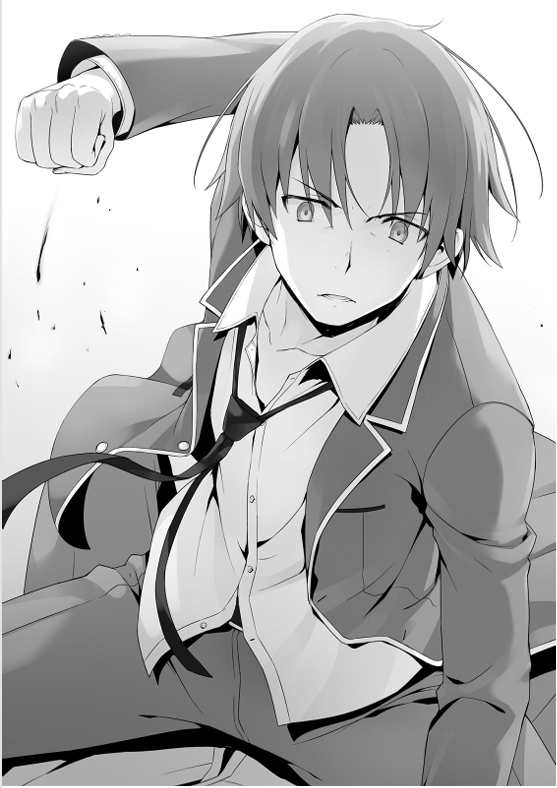
La escena animada en la segunda temporada de la azotea escenifica mal el verdadero meollo que ejemplifica esta escena clave, en el anime nuevamente la faceta unidimensional predetermina (casi de manera tajante) que el único conflicto habido y por haber es la indiferencia que el protagonista siente con respecto a la fácil tarea de destrozar a Ryuen. Pero aunque predomine eso, lo que dictamina la escena no es tanto la indiferencia que le causa (que sin duda le genera) sino la emoción que siente el protagonista al no sentir nada.
No es un oxímoron, es lo que la escena realmente relata:
Conozco el miedo que es causado por el dolor. Sé cuán miserable y aterrador se siente ser un
perdedor.
He visto a personas romperse en frente de mis ojos incontables veces.
Pero luego de un tiempo,dejé de temer. Solo sentí frío.
Porque me di cuenta de que no importa por cuánto sufrimiento y
desesperación otros atraviesen, yo mismo nunca tendré que experimentar lo mismo.
Siempre y cuando yo posea
los medios para protegerme a mí mismo, todo está bien.
Siempre y cuando yo esté a salvo, eso significa que
soy el vencedor.
[...]
No sé qué está diciendo él desde ya hace un rato.
Desafortunadamente, no puedo
ver mi propio rostro, mi propia expresión.
Pero hay algo de lo que estoy seguro.
Es que algo tan trivial
como esto no sacudirá mi corazón.
No debería haber emocionados filtrándose.
Volumen 7 - Capítulo 5
La expresión en la novela retrata enojo, pero muy probablemente se escenifica como en el anime, lo que el autor deja ver es como los 2 personajes redescubren una emoción distinta y cruzada a la vez. Ayano sintió indiferencia, y es precisamente el porqué siente enojo, esa expresión es su verdadero sentimiento, no es qué la indiferencia sea falsa, al revès es tan real como reales son de contradictorias las emociones que cataliza Ayano, vemos que no esque pase episodios narcisistas de querer dominar a sus compañeros, es que ramifica y redimensiona el entorno (a sus amigos) para que cumplan la única y gran tarea de salvaguardarse así mismo, la victoria no es aplastar a enemigos, es aplastar amenazas para él, Ayanokouji.
Gran parte de aplastar a la clase C de aquel entonces le permitió formalizar su relación con Kei, esa forma tan retorcida de formalizar esa relación es prueba fidedigna que Ayano no concibe (al menos en ese entonces) forma humana o genuina por la que alguien podría entablar una relación si no es base a la dominación del otro, someter a Kei bajo estas circunstancias le permitió acceder a sus grandes malestares y el poder aprovecharse de ellos.
En parte esto lentamente fue formando el terreno, en la que tarde o temprano se inmiscuirá Ayankouji preparando el mismo el terreno sin saberlo, y es que durante esta propia estancia estamos ante la segunda emoción si bien no ejemplificada si mostrada en múltiples escenas.
El experimento de Ayanokouji
Una de las emociones que predominara todo el volumen de segundo año es la “curiosidad” esta faceta de hecho
se ha presentado desde siempre, Ayano experimentando cosas cotidianas siempre se resalta que tiene curiosidad
sobre muchas cosas bastante comunes y lógicamente también se toma en cuenta su proyecto de “libro de romance”
que intenta investigar con Kei en el primer año.
Sin embargo, establecer esto no solo basta, porque esta
curiosidad cultivada en Ayanokouji viene de cierta forma medida por un segundo objetivo que se viene
desarrollando a lo largo del primer año y por vez primera toma cuerpo y forma en el volumen 11.5. Volumen
sumamente importante que da entender el nacimiento y germinación inicial de lo que más adelante desarrollaré.
—Lo que pude lograr en la escuela, y lo que no pude. He estado pensando en esas cosas
últimamente.
Dicho eso, Horikita mayor miró en dirección de la escuela por un momento.
—¿He mostrado mi
fuerza por completo, aún tenía margen para crecer? Ese tipo de cosas.
En otras palabras, vivía en
circunstancias completamente opuestas a las mías.
Era por este motivo que escaló hasta la posición de
presidente del consejo estudiantil.
—¿De verdad crees que continuar así tendrá algún sentido en el
futuro?
—Si lo miras desde mi perspectiva, queriendo vivir una vida confortable, diría que tiene
sentido.
—Tal vez. ¿Pero no quieres dejar algo aquí, en esta escuela? Si ese es el caso, entonces pienso
que la pregunta ‘¿De verdad crees que continuar así tendrá algún sentido en el futuro?', es algo en lo que
deberías pensar cuidadosamente.
—Dejar algo aquí... eso es algo que solo alguien que destaca tanto como tú
puede hacer.
Negué la posibilidad, pero Horikita mayor no estuvo de acuerdo conmigo.
—Si no puedes
grabar tu legado sobre la propia escuela, solo necesitas hacerlo sobre los estudiantes. Permite que el
estudiante conocido como Ayanokouji Kiyotaka quede grabado en las mentes de los alumnos, y ellos no se
olvidarán de tu existencia.
Grabar mi existencia en la mente de alguien. Nunca he pensado en hacer una cosa
así.
[...]
— ¿Convertirme en una existencia inolvidable? Sigue siendo posible que me expulsen
durante el
segundo y tercer año.
—Incluso si te involucraras en un número de incidentes en estos tres años y
enfrentaras el destino de la expulsión, seguirás permaneciendo en la memoria de los demás. Mientras haya
estudiantes que recuerden esos tres años y piensen que la existencia de Ayanokouji Kiyotaka es verdaderamente
grandiosa', pienso que puede considerarse como un éxito.
Horikita mayor lo dijo una vez más, y sentí que
sus palabras lentamente ingresaban a mi corazón.
—Entiendo... sí. Pensaré en esto más atentamente.
Esa
era la mejor respuesta que puedo darle ahora mismo.
—Está bien. La respuesta a esta pregunta no es algo que
yo deba alcanzar, es algo que tú, Ayanokouji, tienes que descubrir tú mismo.
Volumen 11.5 Capitulo 4
Manabu materializa lo que sera a partir de entonces un objetivo que resonara continuamente en el corazón de Ayano, bajo este objetivo sus acciones tomaron un nuevo propósito, más allá de llevar a sus compañeros a situaciones límites para usarlo, experimentará de primera mano y en primera fila las transformaciones y múltiples progresiones que se darán en sus compañeros a lo largo de estos años, atento y curioseando acerca de como y porque actuan así, como cambiaron hasta el punto en el que llegaron, hasta que punto progresaran son preguntas que se plantea Ayano y le da curiosidad llegar hasta el final.
Esto no se dice de manera explicita, muchas veces Ayanokouji dice de manera implicita la curiosidad que tiene sobre una u otra persona, pero por ejemplo en un dialogo con Sakayanagi:
—... De cualquier manera, no es como yo, ¿verdad?
—Puede que sí. Al menos ahora te das
cuenta de que perder a Kamuro te hizo más débil, pero también puede hacerte más fuerte.
Sería un problema
si ella tropezara y no pudiera volver a levantarse con sólo esto.
—Así que siempre has estado entre
bastidores, dando consejos como este a varias personas. No me extraña que todos estén creciendo.
—Aún están
lejos de hacerlo.
Sakayanagi no tenía nada más que decir. Se limitó a inclinar lenta y cortésmente la
cabeza.
Sentí que no podía quedarse más tiempo conmigo.
Me despedí de su pequeña figura y volví a
sentarme en el banco.
—Al final, la expulsión de Kamuro se ha convertido en una bendición.
Ninguna otra
variable había influido tanto en las emociones de Sakayanagi como esto como ahora.
Sin necesidad de
controlar la situación, sus puntos de clase también se habían reducido.
Era una prueba de que cada clase
estaba ganando fuerza y volviéndose más capaz de luchar.
De aquí en adelante, la propia Sakayanagi
necesitaba pensar mucho, darse cuenta de las cosas y crecer significativamente.
Y así, su viaje para
confrontar sus emociones nunca experimentadas comenzó.
[...]
—Supongo que debería seguir tranquilamente
con los preparativos.
Sobre Karuizawa Kei. Sobre Ichinose Honami. Y sobre la clase.
Con el tiempo que me
quedaba en la escuela, empecé a tomar medidas para convertirme en una presencia memorable para los que me
rodeaban.
Volumen 10(21) del 2º Año Capítulo 7
Todo lo que Ayano busca partiendo del siguiente volumen es básicamente un nuevo objetivo que entra en duelo con su primera meta escenificada dicha dinámica al final del 11.5 en la escena famosa de Ayanokouji rezando, la oración ese acto de súplica por cambiar la forma de ver las cosas, el mundo, las personas no es algo gratuito, es algo que se ha germinado de principio a fin.
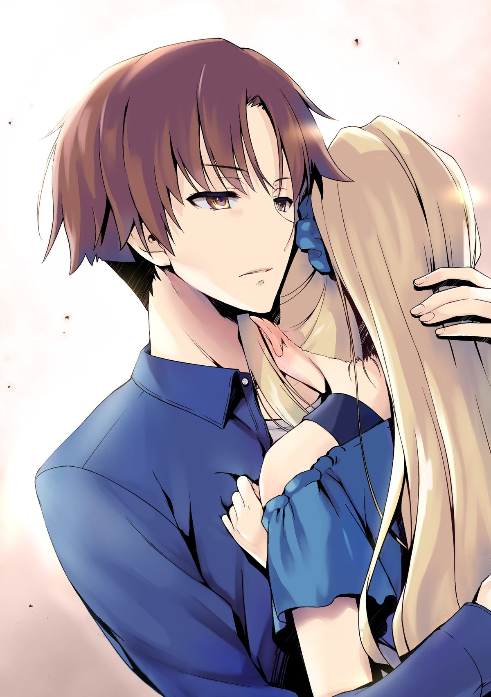
En esa propia escena se ve a un Ayano suplicando por un cambio, por una atisbo de esperanza, una súplica sincera, no es un diálogo cínico, son los verdaderos deseo aflorando en nuestro protagonista. Lentamente, se ve un ligero cambio en la perspectiva de Ayano si bien continua y arrastra su forma de ver las cosas, al menos hay un intento de perseverar en esas circunstancias, esto es lo que choca en el volumen de segundo año con el encuentro de personas relativas a su institución.
La llegada Yagami y Amasawa de hecho choca a Aynokouji en aspectos pequeños, pero importantes, debido a que se descubre que los sujetos de la 5º generación recibieron educación en interacciones sociales también, por eso Yagami y Amasawa son fundamentalmente opuestos a Ayano (en principio) aunque cumplan de manera tajante el mismo principio anti-ético egoísta de ganar a cualquier costo (salvaguardarme bajo cualquier circunstancia)
―Si sientes lo mismo que yo, también deberías ser consciente de lo interesante que es este
lugar…
―Entiendo lo que quieres decir, senpai. He pensado en esto más de una vez. Sólo me quedaré aquí
hasta la graduación, siendo un estudiante que vive una vida divertida. Aunque no soy bueno haciendo amigos, y
no tengo mucha gente con la que pueda hablar.
¿Cómo debería decirlo? Es como si ella fuera similar a
mí.
Aunque había hablado con Horikita, Ike y otros, todavía había una especie de distancia entre
nosotros.
Recordé un cierto período de tiempo, en el que ni siquiera podía considerarlos como 'amigos",
francamente.
―Pero no me falta capacidad de comunicación como a mis predecesores.
Amasawa pareció saber
lo que estaba pensando y me corrigió.
Volumen 4 Año 2º Capítulo I
Hasta este momento he ejemplificado de manera sencilla, citada y sustentada, al menos la sospecha de que reducir a Ayankouji a un encasillamiento o tropo literario internauta es como mínimo cuestionable, obviar estos dialogos y reducir al protagonista a una especie de face unidimensional estática que solo tiene “convenincias de guion” es de hecho una de las más grandes tergiversaciones del personaje, entre esas tambien incluye la manera en la que las personas se autoinsertan en el pensamiento anti-ético que Ayano muestra en sus primeras facetas.
Como todo personaje bien escrito, Ayano transita etapas, transforma objetivos y cambia constantemente, los planteamientos que el plasma sobre su entorno, sus amigos su futuro no es algo que se agrega de manera redundante o arbitraria, tampoco la obra focaliza notoriamente el matiz “harem” que muchas veces los fanáticos buscan, porque para desgracia de ellos incluso si cote recae en cierta compra vendas de ese mercado como cualquier obra y su merchandising, eso no quita seriedad a los puntos que el autor trata con un entramado de diálogos eficaces que lentamente entre trama una red cada vez más compleja de matices que envuelve nuestro protagonista.
Con esta primera sección he demostrado 3 cosas
Las ideas generales y la figura de Ayanokouji
Discernimiento absoluto a encapsular esta figura a una
especie de tropo literario
Y preparar el terreno para desenvolver mis próximos temas
Analisis General de los puntos Base
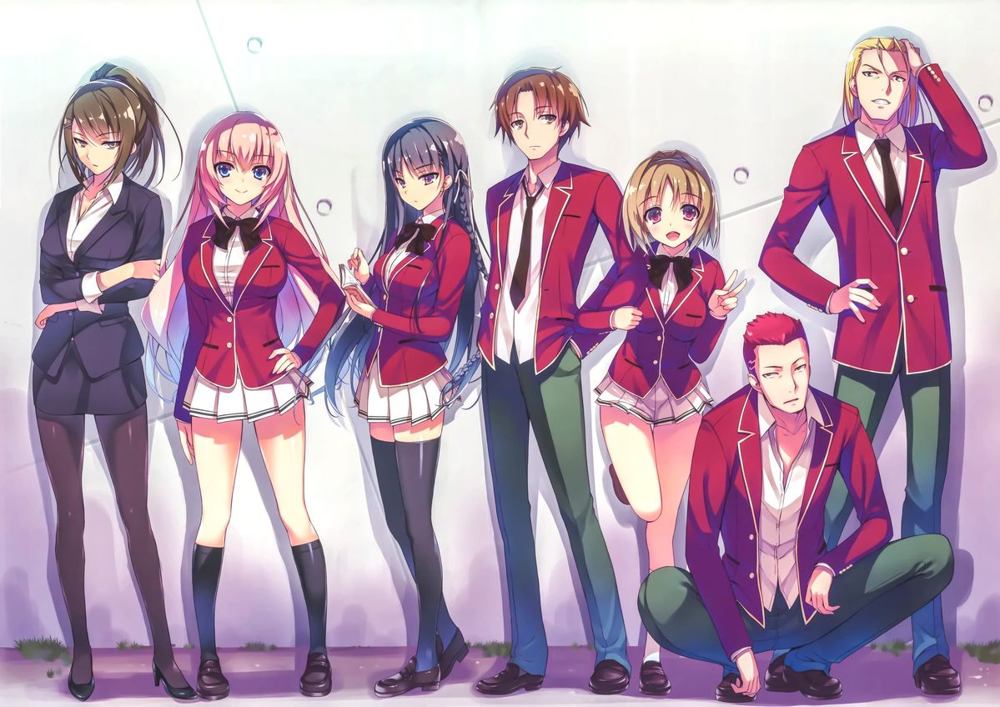
Este desarrollo de la figura de Ayanokouj recoge entre otras cosas materiales tanto de los primeros volúmenes como el de los siguientes años, entre otras cosas, porque múltiples desarrollos posteriores solo toman forma en el segundo año, en el primero es más una serie de germinaciones generales que insertan en no uno, sino varios personajes claves que tomaran un peso y una relevancia futura.
Muchas veces la escritura de Kinuagasa muestra personajes que en principio se presentan como irrelevantes para más tarde representar un peso mayor en la obra, sea cual sea el peso que desenvuelvan de manera más o menos protagónica, esos detalles que a menudo se toman por desapercibido hace que el giro de las cosas sean tan radicalmente impensables en un principio, si no se ha tenido uan lectura atenta.
Enumeramos al menos del primer año personajes con una relevancia fuerte
- Hirata
- Horikita
- Kei
- Sudoku
- Koenji
- Ryuuen
- Ibuki
- Hiyori
- Sakayanagi
- Kushida
- Manabu
- La Crisis de Hirata con la expulsión de Yamaguchi orquestada por Arisu.
- El Aislamiento Social y aversión general de Horikita con las personas.
- La dependencia sexoafectiva de Kei con Hirata y Ayanokouji
- Los problemas de ira y control de Sudoku
- La inoperancia de Koenji
- Ryuuen y sus crisis traspasada tras su pelea con Ayanokouji
- Ibuki y su aversión general con las personas (Esta la hizo compatible con Horikita a futuro)
- Los Encuentros casuales y charlas relajadas de Hiyori y Ayanokouji (tomará una relevancia tardía pero efectiva más adelante)
- Sakayanagi Arisu y su cercanía con quienes en principio nunca consideró amigos reales
NOTA: En el volumen de primer año no se muestra de hecho, básicamente al menos en el entramado de primer año Arisu se desenvuelve únicamente como la única hasta aquel entonces que tenía más conexión con Ayankouji, su filosofía en relación con la inteligencia y la superdotación reduciéndolos a única y exclusivamente a cuestiones de dotaciones genéticas proclamándose a sí misma como una inteligencia “natural” y de hecho presuponiéndose como la antítesis de White Room, pues ella no necesitó un entorno exhaustivamente preparado para desarrollar dicha inteligencia, dejando de lado que dicha filosofía no cambió, sencillamente Arisu asume su derrota tras descubrir el potencial de Kouji.
No atraviesa una crisis en general porque al igual que Kouji, Arisu peca en verse envuelta nuevamente en el cinismo de pensar que su inteligencia la protegería de manera tajante, hasta que vio por su propia mano cómo dicha la traiciona, siendo no muy “pragmática” al momento de la expulsión de Kamuro. Sin embargo, las circunstancias se desarrollaron de tal forma que se dio la expulsión de una amiga.
Con este dicho Arisu atraviesa una etapa mucho más robusta en el volumen de segundo año, pero en el primero con la notación que acabo de mencionar es suficiente para sentar bases y puntos generales.
- La doble faceta de Kushida
- Y Finalmente Manabu siendo la razón única por la cual Miyabi se interesara por Ayankouji y además siendo Manabu el primero en materializar el nuevo objetivo de Ayanokouji
Al menos todo esto se abordó de manera bastante clarividente y toma mayor peso cuanto más pasa el tiempo ej. Koenji en el volumen de primer año y su inoperancia tuvo interacciones con Mei quien se involucró de más en la crisis de Hirata. La crisis de Hirata de hecho se extrapola mucho a la crisis que posteriormente cataliza Ichinose, pero ella va a un segundo nivel. Esta interacción de Koenji en principio irrelevante causa conflicto en posteriores encuentros con Koenji (Recordemos la reunión de Padres, cuando Atsuomi quiso forzar un encuentro con el padre de Koenji, hubo un mutuo encuentro entre ellos 2).
Incluso Ayano intento utilizar a Mei como baza, pero es interesante ver que Koenji no tiembla.
Con esto ejemplificado tenemos la ramificación completa de todo el entramado que desarrolla Cote de manera germinal al menos el primer año algunos arcos culminaron en ese año (Horikita,Ryuuen,Hirata) otros recién están empezando a tomar forma (Kei, Kushida,Koenji) otros ya formaron sus arcos en el segundo año (Hiyori, Ibuki, Sakyanagi).
Estén terminados como el de Arisu o recien formados como el de Hiyori poco importa, ahora Horikita atrevida una crisis completamente diferente a la del primer año.
Unos arcos se han renovado, otros no, otros recién comienzan. En fin, al maestro Kinugasa no se le ha escapado ni un solo detalle.
Disertación concisa sobre determinados prejuicios
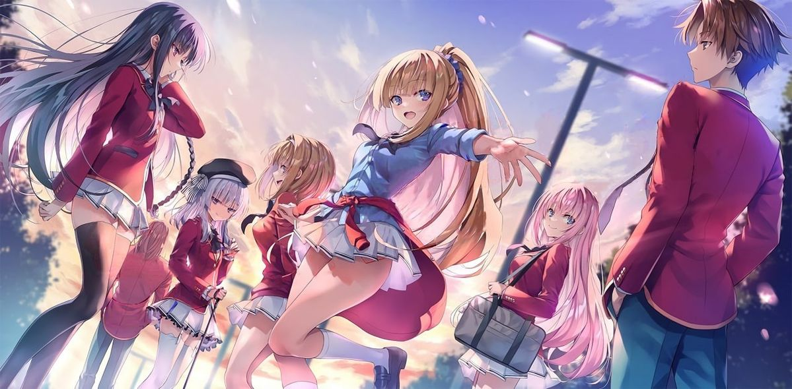
Con todo el contenido que he podido redactar en los últimos párrafos, cuesta creer que aun existan personas que no tomen en serio la inteligencia de Kinugasa tal vez.
¿Menosprecian la obra porque su artista es un dibujante hent#ai, quizás?
Y por eso la reducen a un SoL genérico y cliché que únicamente se preocupa con quién se quedara el
protagonista al final.
Si bien en principio el tropo de novelas ligeras sobre un harem es algo muy común, de hecho en términos
generales hay obras clasificadas a harem, Cote no es una de ellas, incluso si da la impresión de girar en
torno a ello es inevitable porque un recuento de la vida se supone que es cotidiano, la obra muestra
literalmente la vida normal de los personajes de manera general (que de hecho muchos de esos encuentros
casuales terminan siendo la razón por la que las circunstancias se tornan a favor para Ayanokouji) no de
manera gratuita solo porque el si sabe aprovechar las oportunidades y entender las situaciones, no es hasta el
reciente volumen del tercer año que Ryuuen finalmente comprende como Ayanokouji piensa.
Con esto dicho cabe determinar de manera tajante, incluso si denominamos las heroínas de las cuales estan enamoradas de Ayanakouji serán hasta ahora:
- Horikita
- Sakura
- Kei
- Satou
- Arisu
- Hiyori
- Kushida
- Ichinose
Entre estas 8, 2 están expulsadas (Arisu y Sakura).
Sakura sin pena ni gloria, porque no fue un personaje de mucha relevancia lejos de ser del grupo
Ayanokouji.
Y Arisu ya tuvo su propio arco protagónico, su propio crisis y reclamos.
Nos quedan 6 de las cuales podemos descartar al menos 2 más (Satou y Kushida) quienes al menos Kushida tiene su propias crisis o vais a también borrar toda su interacción violenta contra Horikita y Ayankouji, interacción que vio su culmen y punto de inflexión cuando Kushida soltó las bombas en el volumen 16 en el examen de unanimidad.
Satou, por lo contrario, sin pena ni gloria, la diferencia es que toma relevancia de manera discontinua, a veces no la vemos en volúmenes y otras la vemos tomar más protagonismo.
Con esto nos reducimos a 4, Kei,Horikita,Ichinose y Hiyori entre todas estas solo Hiyori no tuvo una crisis propiamente vista ni una evolucion propaimente escenficada (puesto que su papel es otro) y en cambio las otras TODAS an ha atravesado por sus propias problemáticas, reducirlas a ser el interes amoros del protagonista es sencillamente no haber leído nada, Horikita de hecho ahora esta entre la espalda y la pared porque cualquier idea de romance es inútil, y esto permitió que interactuara con Kei y tuvieran diálogos de peso realmente grande.
Solo queda Ichinose y pensar que se reduce a un interés amoroso es básicamente haber leído con los ojos
cerrados todo su desarrollo, y siendo ahora prácticamente una de las piezas más imprescindibles de la obra
para tomar la dirección que toma actualmente.
La mayor queja de este tipo tropos literarios es que reducen el elenco femenino a meros arquetipos o
complementos del protagonista masculino, pero honestamente quien ha leído la obra con la seriedad que merece
se dará cuenta de que la cantidad de arcos inter-conexos que Kinugasa construye, reconstruye y redefine con el
pasar de los volúmenes.
¿Por qué esa manía con querer pensar que cualquier mujer con la que Ayano hable es automáticamente otro romance fútil más?
Y mira que en anteriores volúmenes se hablaba de Amsawa, Chasibara, Fuka, Nanase.
En fin, una locura.
Lo único que nos queda es Hiyori que si en efecto al menos en retrospectiva solo se le recuerda con los diálogos que tuvo con Ayanokouji; sin embargo, al menos Hiyori lo tomaremos con pinzas más adelante para desarrollar mejor su figura y peso actual.
Todo esto, sin mencionar la actual y totalmente esperable rechazo de las actuales relaciones de Ayano con
Ichinose, vaya al parecer ahora tener relaciones es básicamente subordinar el elenco femenino a un harem
cliché.
Lógicamente, detrás de todo ese embrollo se esconde un desarrollo sutil de los acontecimientos perfectamente
explicados, puestos y contados que sencillamente el lector reduce en la morbosa imagen ver Ayankouji teniendo
relaciones sexuales.
Conclusión, no, no existen algún tipo de jibarizaron del elenco femenino ni los personajes femeninos se reducen a romances o encuentros sexuales (esto último, si se reduce, lo reduce en todo caso el lector, no el autor)
Direccion de Antaño, personajes y volumenes clave
| Volumenes más importantes del 1rº Año |
| Volumen 3 de 1º Año |
| Volumen 7 de 1º Año |
| Volumen 11.5 de 1º Año |
El volumen 3 se destacó principalmente por el giro que estoy hablando y entre otras cosas porque ahi ya se está germinando varios puntos (Aislamiento de Horikita, La doble faceta de Kushida, la dependencia de Kei) y finalmente la revelación de Ayanokoujin Kiyotaka.
Sentar las bases de tal forma como mencione sobre la analogía de Ícaro introduce de manera bastante práctica la situación de nuestro protagonista, fue en el volumen 7 donde los acontecimientos y el sutil desarrollo de las cosas llevo a Ayanokouji a redescubrir facetas que aún estaban por describir, todo esto culminó en el volumen 11.5 y la floreciente esperanza que cultiva muchos personajes.
Con todo lo analizado hasta ahora nos daremos cuenta de que no he tocado el Volumen 8, y es que este Volumen por sí mismo no tiene relevancia sin los acontecimientos ocurridos en él segundo año, por ello lo dejo de lado al menos de momento, aunque no ignoro que la presencia de Atsuomi no haya sido importante a monera de introducción, y entre otras cosas lo que se vendría preparar como la sustitución del director interino, hablando de Tsukihiro.
El primer año prepara una serie de germinaciones que solo toman forma en el segundo año, así que muy probablemente más de una ocasión volveremos aquí.
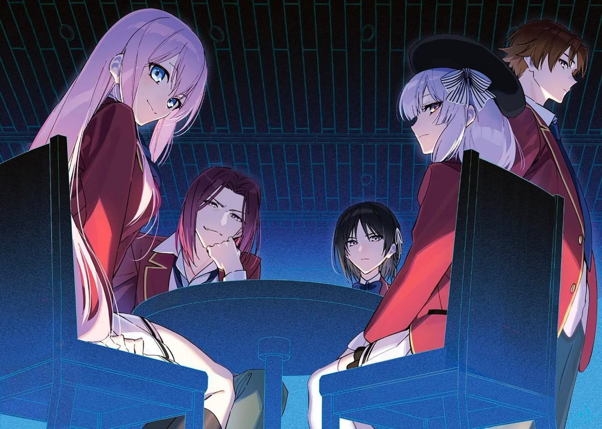
Volumen de 2nº Año
La prospeccion general del contexto socio-político (Cronotopo-Externo)
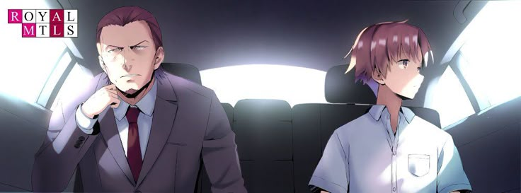
Puntos
Bueno, basta de germinaciones y pasemos a platos relativamente fuertes, uno de los sectores que Kinugasa ignora al menos en gran medida el primer año y le da protagonismo en el segundo es el cronotopo externo.
Así que antes hablar del contexto interno de la obra hablemos de su Cronotopo externo, el contexto sociopolítico que se desenvuelve fuera del contexto de la escuela.
Este se filtra de manera multidimensional en diferentes ámbitos y de diferentes formas
- Nuevos personajes
- Encuentros y revelaciones posteriores
- Volumen 0
El volumen 0 es el único volumen escrito y desarrollado que focaliza única y exclusivamente como aconteció todo lo que involucra a la White Room y el conflicto político que arrastran diferentes apellidos importantes, entre ellos Atsuomi Ayanokouji se nos presenta como personaje con una ambición tal que desmantela por completo el panorama actual esto lógicamente en relación con como se explicara el talento de Ayanokouj.
Por otro lado, la introducción de nuevos personajes: Nanase, Amasawa, Yagami, Tsukihiro dio rienda suelta para extender el marco específico de saber como Ayano escapo, que peso tiene la existencia de Ayano para la White Room, su estado actual, etc.
Y por último la revelación de las familias, entre ellas está la familia de Ryuji Kanzaki,Fūka Kiryūin, Rokusuke Koenji….
En fin hay muchas formas en las que el autor se tomó la libertad de extender este contexto externo que raramente se trata.
Personajes Nuevos
,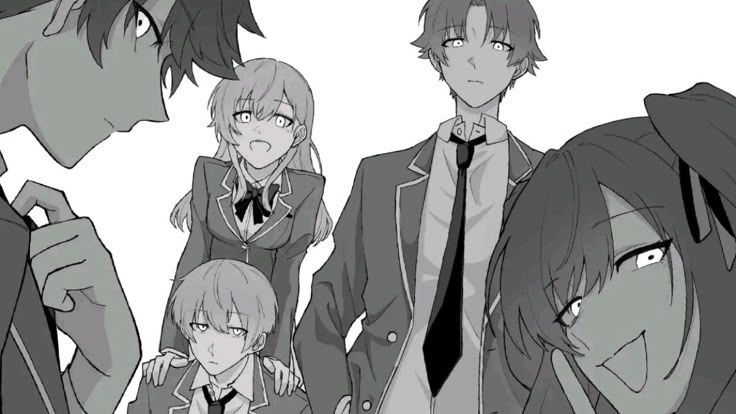
Como hemos mencionado antes, los nuevos personajes tienen aportaciones frescas, entre ellas revive el diálogo que se tuvo en el Volumen 8 entre Aynokouji y Atsuomi quienes hablan de un mayordomo que le permitio escapar, que sorprendentemente estuvo vinculada a Nanase.
Amasawa y Yagami confirman el actual funcionamiento de la white room y su planificación de 5º generación de sujetos nuevos a quienes le incorporaron habilidades sociales, seguido de eso la intervención de Tsubaki tomara más peso adelante, en cambio, se nos revela que como mínimo hay un tercer estudiante de la white room a un oculto, la obra nos da detalles lo suficientemente sutiles para pensar en Ishigami actual estudiante de segundo año, pero no hay nada confirmado, lejos de que es sencillamente el nombre que más resuena.
Con Todo esto en mesa exploremos puntos clave:
- El peso de Ayankouji como producto estrella e insignia de la White Room
- Los celos y el complejo de inferioridad que sufrieron los de la 5º Generación.
- El mayordomo que le dio una vía se escape a Ayanokouji.
Estos numerosos contextos se interconectan de manera casi consecutiva entre el 1º Volumen hasta el 4º, dejándonos menos margen de misterio entre el paso que acontece entre Ayanokouji en la White Room y fuera de él. Nunca se dio detalle explícito, se dejó más bien como una anécdota, que lentamente se va acotando con la interacción con Tsubaki.
Toda esta matriz de acontecimientos desencadena una, de las escenas en las que nuestro protagonista redescubre una nueva emoción nunca antes obtenida, si somos atentos a la lectura nos daremos cuenta de qué Ayankouji no tiene simpatía por su lugar de origen, es más ni siquiera se dirige a su padre como padre, le llama “ese hombre” o “el” siempre como un tercero siempre anónimo, distante.
Sin embargo, en los recientes volúmenes se nos dio conocer la nostalgia:
—En realidad, últimamente me ha venido a la mente la cara de alguien que no es de mi familia... alguien
a quien me gustaría ver. Es gracias a nuestra charla durante el campo de entrenamiento que se me ocurrió,
así que... sólo te lo hago saber.
—...Entonces, ¿no es un familiar? ¿Quién es?
Supuse que mi
comentario era demasiado vago y podría confundir a Tsubaki. Pero ella preguntó de todos modos.
—Bueno...
Si tuviera que dar un equivalente cercano, ¿quizás podrías llamarla una amiga de la infancia?
Sí,
alguien de la Sala Blanca, una chica de mi edad cuyo nombre casi había olvidado.
Se llamaba Yuki.
Aunque no estoy del todo seguro. Pero de alguna manera, la palabra “Yuki- Tsubaki” me vino a la mente.
[...]
Tal vez la presencia de Tsubaki se asemeja a la suya en cierto modo, y eso actuó como detonante
para remover mis recuerdos.
Esa es mi suposición, al menos.
Pero... ¿realmente fue sólo una
coincidencia?
(“¿Te gusta Yuki, senpai?”)
Eso me había preguntado Tsubaki en el campo de entrenamiento.
En aquel entonces, no me pareció fuera de lugar, pero ahora parece diferente.
—...Si llegas a encontrártela,
¿qué harás?
Tsubaki, quien antes no había mostrado ningún interés, insistió.
—En realidad, lo
más probable es que no volvamos a vernos. Es sólo... nostalgia, supongo. Por eso dije que quería que
nos viéramos.
Pasado y presente... ¿Serían diferentes las cosas si nos conociéramos?
Pero probablemente
es mejor si no lo hacemos.
Sólo tenía curiosidad por saber si las cosas cambiarían.
Dicho esto,
la esencia probablemente no cambiaría.
Dudo que surjan nuevos sentimientos.
Si esa chica tiene
alguna relación con Tsubaki es probablemente una pregunta sin sentido.
Volumen 1(24) del 3º Año - Epilogo
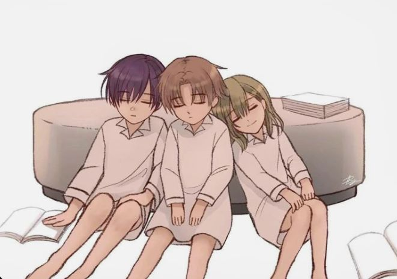
Con todo esto la construccion externa al menos por aparte de los personajes aporta tanto al contexto general de las cosas como a las conexiones del protagonista.
Encuentros y Revelaciones & el Volumen 0
Entre los encuentros y revelaciones, nos situamos al final del Volumen de Segundo Año que se nos revela finalmente la situación (débil) del actual Partido de Kyouei (Partido de Atsuomi) contra Ciudadanos (Partido de Padre de Koenji), en este hemisferio de políticas podemos ver enfrentadas dos formas relativas de educación enfrentadas.
Profundizaremos tanto el volumen 0 como este encuentro y es que se nos revela que la actual estrella de White Room, es en realidad lo más parecido que hay a una mutación genética.
Dentro de los planes de la White Room se rige bajo criterios en los cuales se presupone que al menos dentro de los programas intensivos que han sometido a esos chicos nacidos de padres prodigiosos (Recordemos el monólogo de Amasawa y como sabe sus orígenes de fecundación in vitro) cabe la posibilidad de cultivar talentos únicos combinando tanto una genética medida como la epigenética. Ayanokouji es lo más parecido a una mutación en el mejor de los casos, porque es un humano común y corriente, ahora (y esto en relacióna como se nos presenta su padre) parece que su versatilidad y la forma en la que se adapta a su entorno ha excedido cualquier límite humanamente posible.
Usualmente, las personas aprenden talentos y se les olvida, no siempre podemos albergar toda información de manera continuada, heterogénea, y sobre todo de manera tan desproporcionada como lo es el caso de Kouji.
Al menos en principio si podemos decir que hay una debilidad es básicamente si Kouji no lo ha probado nunca (esto se nos da detalles en el evento cultural que tuvo la clase donde fallo los tiro para conseguir un premio en una cita con Kei)
—¿Cuál fue la parte lindo y adorable?
Fue sólo un momento en que no había nada bueno en ello.
—Me hizo feliz ya que no es como si fuera en un manga en el que solo lo logras con un disparo en momentos
como este. Me hizo darme cuenta de que no se puede hacer todo.
Es cierto. Mi método se basa en la
experiencia. A menos que haya algo que pueda aprovechar de la experiencia pasada, no hay manera de que
lo haga bien a la primera, ya sea con un juguete o con cualquier otra cosa.
Volumen 7(18) de 2º Año - Capitulo 4
Tenemos, por un lado, entonces la educación de la White Room la cual quitando lógicamente el fatídico programa de la 4ª generación, la 5º recibió una educación más capaz, al menos en principio, y muy probablemente lo que se nos mostró en el volumen 0 de aulas completamente calladas, hayan cambiado completamente.
Quitando eso, lo que hace la White Room es absorber conocimientos del mundo a la medida del mundo. Con esto vamos a hacer un inciso interesante porque se vislumbra perfectamente lo que quiero decir en una única escena:
—Si son solo palabras vacías, incluso Ike o Hondou podrían decirlas. ¿Puedes demostrarlo?
—No tengo
ganas de demostrarlo. Aprendo intencionalmente solo lo mínimo necesario de los estudios convencionales.
Si perfeccionara mis pensamientos basándome únicamente en el conocimiento que el mundo ha producido,
mi pensamiento se volvería rígido. Eso no sería interesante y me faltaría individualidad. Se nota cuando
te miro.
De hecho, absorbí mucho del conocimiento acumulado en este mundo.
Utilicé ese conocimiento
como base para pensar y construir todo.
—Porque permanezco ignorante, puedo llegar a mis propias
respuestas únicas.
Volumen 12.5 (23.5) Capitulo 7
Basandonos en lo citado, hay sin duda una confrontación directa entre una forma de absorber conocimiento y otra, Koenji muchas veces se muestra reacio a mostrar sus habilidades, de hecho incluso cuando las mostró únicamente en el segundo examen de la isla deshabitada ganándole la apuesta a Horikita menciona en un diálogo junto al enfrentamiento directo con Ayanokouji
Naturalmente, la cuerda fue tirada hacia Kouenji, y el combate se decidió abruptamente.
―Siempre
estás tan centrado en la eficiencia, ¿no?
Kouenji parecía un poco decepcionado, pero quizás había
perdido el interés por mí allí, porque no me dijo ni una palabra más.
Volumen 3(14) de 2º Año
Esta forma de ver Ayankouji de manera despectiva no es gratuita, no son enfrentamientos arbitrarios al
revés alimenta nuevamente la idea por la cual al menos principio podemos creer que Koenji se ha creado
con un sistema educativo completamente diferente. Esos monólogos de Koenji que resaltan mucho el hecho
de “no me lo tomo en serio” va más allá de una fanfarroneada casual y puntual que dice en un momento
determinado.
Cuando digo que “la White Room” absorbe conocimiento del mundo a la medida del mundo,
es qué el arsenal político de la institución blanca se basa única y exclusivamente en las estructuras
y conclusiones que se absorben mediante el programa intensivo de la White Room. Es decir, Ayanokouji
tiene una cantidad ingente de conocimiento y habilidades técnicas inculcadas y cimentadas bajo el orden
de una institución educativa la cual le doto de todo él vía entorno necesario para desarrollar lo que
logro hasta ahora.
Sin embargo, en Koenji vemos todo lo contrario, y muy probablemente nadie se imagina a Koenji recibiendo órdenes de nadie, de hecho y muy posiblemente la”apuesta” que realizo su padre con el padre Ayanokouji ya nos da una pista de que Koenji debe estar en una situación similar, pero diferente, cuando su padre menciona que es un “polluelo”, va más allá de referirse a que es literalmente un adolescente, habla de que muy probablemente no desarrollo todo su potencial, con esto quiero remitir a que la educación de la institución Koenji como mínimo tiene la potestad de decidir sobre la libertad del hijo de su mandatario máximo actual aliado a su vez por el partido político enemigo principal de la facción Kyouei.
Koenji probablemente sea otro producto estrella, no necesariamente criado como Ayanokouji, al menos podemos observar que posee más confianza que inteligencia, no es que sea metódico, eficiente o efectivo, es capaz. Se adapta perfectamente a las amenazas sin la necesidad de depender en agentes externos, lo envuelve cierta capa de independencia a pesar de que lógicamente vive subyugado a las reglas de la escuela (y hasta que se diga lo contrario, vive bajo las reglas de su padre) y aun así lo vemos lo suficientemente capaz para sobrevivir solo, con todos los acontecimientos ocurridos que Koenji no haya estado expuesto a la expulsión no es una casualidad, incluso refiriéndonos a la OAA vemos que sus aptitudes claramente no reflejan para nada el desempeño real que pueda aportar a la clase.
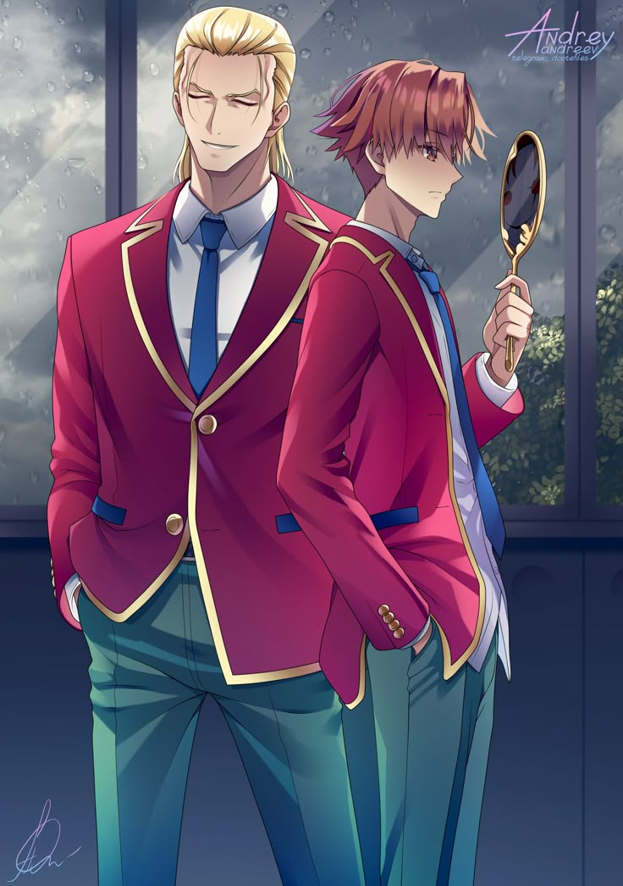
Con estas ideas en mesa podemos al menos concluir que el Cronotopo externo vive en un conflicto político que transfigura en la forma de educación de 2 instituciones que por si mismas aún no demostraron nada (pues estos productos no dieron su valia en el mundo politico) esta pequeña apuesta va más allá de un truco barato para cerca a Atsuomi a Padre de Koenji, usar como trampolín a su hijo del cual ni siquiera puede saber sus intenciones, entonces es más bien un suicidio que una jugada inteligente, o al menos lo sería si se jugara el cargo.
—¿De qué estás hablando? Ese tipo tiene la Preparatoria Metropolitana de Educación Avanzada. Incluso
podríamos hacer de la Habitación Blanca su segunda maniobra.
—La Preparatoria Metropolitana es ciertamente
una de sus principales operaciones. Pero al mismo tiempo, estaba trabajando en un nuevo plan similar
entre bastidores. En otras palabras, su segunda maniobra ya estaba en marcha. No habría sido deseable
para él que ese plan saliera a la luz público.
—...Por eso Naoe me cortó, ¿eh...?
—No sé en
qué momento se enteró de esto, pero Kijima-sensei se enteró de la Habitación Blanca... Puedo decir que
tuvo una discusión con Naoe-sensei y una de las contrapartidas por cancelarlo fue que le prometieron
un puesto en el futuro.
No me había dado cuenta de que Kijima también estaba pensando en un plan
muy similar al de la Habitación Blanca.
—Eso no es todo. Eras mucho más capaz de lo que Naoe-sensei
había imaginado. En los últimos años, él confió mucho en ti, pero ¿no pensaste que también tenías muchas
demandas irrazonables?
—...Sí.
—Eso es probablemente porque tenía miedo de ti. Por el camino, llegaron a esperar tu caída en lugar
de aprovecharse de ti. Pero no fracasaste. No, no fracasaste ni una sola vez. Te las arreglaste para
cubrir tus huellas y mantuviste un perfil bajo. Naoe-sensei no te elevó a la cima. Esperaba que tu hijo
fuera su mano derecha para apoyarlo cuando se convirtiera en un hombre lo suficientemente poderoso para
liderar el país en el futuro. El ojo de Naoe para ver a través de todo sólo había hecho un cálculo erróneo.
Tu ambición sin límites, eso no parecía entenderlo.
Volumen 0 Capitulo 6
Como dije antes, esa forma en la que se narra una ambición sin límites, es la misma forma en la que explica el talento de Ayanokouji.
El crontopo externo compone de manera estructural un conflicto político sobre la educación, recordemos las palabras de Naoe-sensei en la discusion del proyecto de la White Room.
La primera hoja se titula "Plan de desarrollo de recursos humanos (provisional)".
Japón necesita
proporcionar educación no para los próximos cinco o diez años, sino para los próximos 20 o 30 años".
—Nunca había oído que fuera tan entusiasta con la educación.
—Los políticos dedican mucho esfuerzo
a la educación. Aunque no les interese en absoluto, les dará votos dentro y fuera del país.
Este
hombre no quiere realmente cambiar la educación en Japón. Sólo está formulando una estrategia para aumentar
su poder y conseguir más apoyo. El idiota que está a su lado se inquieta y se pregunta por los detalles
del proyecto.
Volumen 0 - Prologo
Con esto he retratado como mínimo la estructura general del cronotopo externo, el plan inicialmente lógicamente iba orientado a un objetivo político, luego se transfiguró en una trayectoria la cual Atsuomi le llevaría cambiar radicalmente sus formas y métodos de hacer política para lentamente transitar a situación actual.
Este enfrentamiento no solo se cuece fuera de la estructura externa de la escuela, dentro de ella existe multitud de políticas, las cuales al menos las que representan de manera general el conflicto externo són Ayanokouji y Koenji.
La prospeccion general del contexto socio-político (Cronotopo-Interno)
Con todo lo presentado podemos ahora complementarlo con el desarollo externo.
Sabemos que:
- El conflicto político y los apellidos que involucran
- El meollo general de dicho conflicto en el que se involucra al menos en el epicentro Kouenji y Ayanokouji
- En la periferia de este gran panorama se encuentran los personajes internos de la escuela.
Personajes de suma relevancia nuevos + los anteriores mencionados
- Horikita
- Kushida
- Kei
- Kouenji
- Ryuuen
- Hiyori
- Ichinose
- Kanzaki
- Hashimoto
- Sakayanagi
- Tsukihiro
- Nanase
- Amasawa
- Shiraishi
- Miyabi
No estan en orden de importancia, pero hagamos un breve recordatorio de todo lo acontecido hasta día de hoy.
Horikita atraviesa un segundo arco de como sobrellevar su dependencia de Ayanokouji
y su nuevo puesto en el consejo estudiantil. Sus hazañas realizadas en este segundo año prueban un progreso
cada vez mayor con respecto a su comienzo, cada vez más considerada, más abierta, de hecho ya cerca
de terminar el segundo año recién replantea sus sentimientos por Ayanokouji, e incluso atravesó por
rechazo hacia Sudou probando su consideración que ha desarrollado no solo como una líder sino como una
compañera.
Incluso sin desamparar sus enemigos como Kushida o Ibuki, establece relaciones buenas,
formo una reputación. Sin embargo, como bien dice Ryuuen.
— Solo estas actuando valiente, pero todo eso es falso ante mis ojos. Es natural que trates de convertir
las cosas a tu favor. Te has vuelto un poco más habladora, pero la única razón por la que parece funcionar
es porque Ayanokouji está a tu lado.
Dicho esto, Ryuuen tomó el vaso de jugo de naranja frente a
él y derramo todo el contenido hacia mí sin dudarlo. Evité inmediatamente ser alcanzado por el fluido
deslizándome lateralmente desde mi posición sentada. La mancha amarilla se extendió y llenó con su fragancia,
de forma inmediata, el lugar donde estaba sentado justo antes.
—¿Acaso has visto la pirueta que
acaba de hacer este tipo? ¿Podrías haber esquivado eso?
—No creo que pueda-
—Así es. Si eres
una persona normal, ni siquiera podrías reaccionar y ya estarías empapado. Una persona normal no sería
capaz de evitarlo, pero este tipo puede evitarlo con una cara despreocupada-
—Ciertamente es un
reflejo altamente ridículo, pero no tiene nada que ver con esta discusión.
—¿No lo entiendes? Ayanokouji
es el arma más letal de Suzune, por así decirlo. Si presumes con una pistola ante un hombre desarmado,
no es de extrañar que diga tantas palabrerías.
—¿Te has tomado la molestia de pedir un zumo de naranja
sólo para probar eso? En serio, dame un respiro.
Me pareció extraño, pero sigue siendo el mismo
tipo que hace las cosas más ridículas. Fue una suerte que aún fuera consciente de cuándo bebería tal
bebida inapropiada.
—¿Por qué lo evitaste? Si lo hubieras tomado todo de frente, podrías haber bloqueado
su regreso.
—No tiene sentido. Realmente no quiero oler a zumo de naranja.
Huele mal, es pegajoso
y no se quita. Los obstáculos son demasiado altos para ser cubiertos incondicionalmente.
Si hubiera
sido un té oolong, podría haberlo soportado.
Volumen 6 (17) de 2º Año - Capitulo 4
Toda esta valentía y confianza que cree haber construido es muy en parte por la sombra de Ayanokouji.
Kushida es de los personajes más interesantes, por qué el uso que se le puede dar es magnánimo, recordemos qué en principio las classes ajenas no saben de su doble personalidad, el hecho de no haberlo dejado morir y reciclarloc personaje semi-redimido (Pues parece más indiferente que redimida) puede llegar a dar un sin fin cuestiones interesantes, entre ellas el hecho indudable de que Kushida es el máximo logro de Horikita hasta la fecha.
Kei recién explora su arco de ruptura y hay buena sensación, el hecho de que la ruptura de permitirse interactuar con Horikita y de cierta forma animarse mutuamente fue muy conmovedor, a aparte de que Kei tras la ruptura dejo en Kouji lo que podrimos denominar la segunda debilidad de Ayanokoujin kiyotaka.
Kouenji de él ya, hable bastante y no hay mucho que agregar.
Ryuuen es actualmente el principal verdugo de Ayanokouji, lentamente Ryuuen aprende sus tácticas, incluso si en los últimos 2 enfrentamientos solo termino humillado, lentamente se acerca a la idea general de como combatir de tú a tu Ayanokouji, aunque y, sin embargo, le costara en parte porque Ayano en el último volumen saca a relucir la fuerza de la que carece la clase A y B y que solo la D posee.
Hiyori por más que a día de hoy solo ha tenido con suma relevancia conversaciones cotidianas con Kouji es una pieza fundamental de hecho revelada en el primer volumen tercer año, pero desarrollaremos esto más adelante.
Ichinose lo mismo da para ella, desarrollaré esto más adelante.
Kanzaki quizás el personaje con el giro más inesperado, entre otras cosas porque su “golpe de Estado” fue completamente opacado por el desarrollo de Ichinose Honami quien mostró un arco más maduro y conciso. Kanazki, por lo contrario, desde el examen de unanimidad y su “pulla o forcejeo” y el sermón que hecha en clase no llega ni nunca llego al fin y al cabo a ejecutar nada ni con Himeno, todo se volvió difuso y su catarsis en el examen donde expulsan a Maezono se evidencia en el pesimismo en el que está hundido completamente.
Hashimoto apenas comienza a mostrarse, de lo poco que se ha visto y lo que ha logrado es sin dudas un lunático que aposto por el caballo ganador, pero entre otras cosas, junto a Ai Morishita, sabe cosas más interesantes que la mayoría, su mayor amenaza es Hiyori Shina.
Sakayanagi ya mencioné por encima lo que aconteció en relación con Kamuro. Pero parece que tendrá papeles importantes, aun así, conceptos que tomaremos más adelante en relación con su diálogo con Ryuuen sobre “La debilidad de Ayankoujin Kiyotaka”.
Tsukihiro más bien da detalles interesantes y poco más su estancia en la obra fue mínima, pero sigue siendo un personaje de relevancia indiscutible.
Nanase el objetivo sigue vinculado a la tragedia de los Eichiro si no recuerdo mal se llamaba así, el plan de Nanase es evitar más víctimas como las de que tuvo el mayordomo y su hijo y para ello implica acabar con el tipo de personas como Atsuomi o evitando que Kouji se convierta en una de ellas.
Amasawa és quizas al menos en principio el personaje menos relevante y al menos al igual e Yagami no aporto nada lejos de lo principalmente planteado, entre otras cosas porque al menos Amasawa (quitando el cutre cruce que tiene con Horikita,Kushida e ibuki) poco o nada se ha extendido sobre ella.
Shiraishi la dejaré para el final, pero es la pieza culmen de todo lo que hemos estado relacionando con personajes clave: Hiyori, Ichinose.
Nagumo Miyabi de hecho tiene más relevancia de la que se le da obviando lógicamente que nunca desistió de su ideal narcisista, de querer probar que es el “más fuerte” el transcurso casi cómico de como nunca se le presta atención es sublime entre otras cosas porque resulto tan ridículamente altivo que ni Kouji tuvo interés en el y siempre habia X o Y acontecimiento más interesante. Con todo y eso no subestimemos a Miyabi el como confronta a las personas como Kouenj y sus hazañas por el camino nos hablan al menos de una persona muy metódica aunque no muy brillante o al menos no tanto como el mismo pinta creer ser.
La figura de la white room y la disertación de Ayanokouji
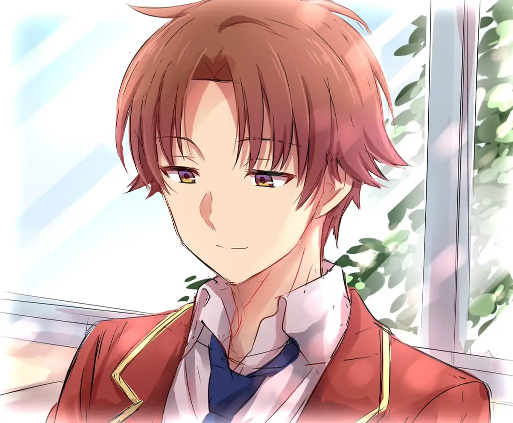
Ichinose Honami - Asuka Shiraishi - Hiyori Shinna
Para trazar estos puntos primero vayamos de vuelta a lo desarrollado hasta el momento, sabemos los objetos nuevos de Kiyotaka tras su diálogo con Manabu, dicho objeto se da forma en ese momento, pero solo toma cuerpo y estructura con el pasar de los volúmenes, porque en primer lugar preguntémonos.
¿De qué manera Ayankouji podría dejar marca en las memorias de las personas?
La única forma, al menos en principio, de poder realizar esta hazaña, es llevar al límite a los sujetos que busca ver progresar, realizar esta hazaña implica incluso en cierta medida abandonar el plan inicial que tenía con respecto a vivir una vida tranquila, aunque no la abandona del todo, es cierto que por lo menor el Ayanokoujin el cual no queria involucrarse ya no existe, no solo se involucra activamente, sino que de manera explícita destruye su máscara y sale al escenario, entiende que realizar este deber conlleva el sacrifico de los últimos años tranquilos que le queda.
El tiempo es estrecho, la situación requiere acción, y por ello lleva las cosas al extremo, tras romper con Kei Kaurizawa, empieza por terminar lo que trabajo con Ichinose Honami, personaje el cual Ayanokouji durante largo tiempo compuso emociones negativas y positivas en ella, y la llevo al extremo su único ataque involucrándola en una expulsión manchando sus manos y llevándola a los límites mentales y concediendo su mayor crisis, incluso mayor que la del primer volumen.
Todo esto desencadeno la actual Ichinose la cual no abandona por completo su idea general del asunto, más bien adapta finalmente su idea sobre la clase a una idea más practica.
Menos cohesiva y más flexible con respecto a su política de clase que hasta entonces era impensable el hecho de expulsar a nadie.
Es más, esto provoca que Ichinose sea el actual personaje que quizás mejor entienda el modo de pensar de Ayanokouji (ignorando el cutre hecho de su idea retorcida del amor) la cual no durara mucho con la existencia de Hiyori.
El punto es Honami retrata lo que se lleva germinando en Kouji desde que dejo de salir con Kei. Cuando Kouji trata de cierta forma de narrar el encuentro íntimo que tuvo con Honami lógicamente esa impotencia no habla de su impotencia física (Por poder podría abandonar la habitación, incluso si consideramos los riesgos con respecto al toque de queda el cual nunca se especificó sanciones específicas en principio no debería haber ningún problema) si no de su impotencia mental, de no poder resistirse de hecho al calor que Honami le ofrece en ese momento porque si, en esencia la ruptura de Kei lo afecto incluso si el mismo no lo retrata basta con leer detalles pequeños como:
Cuando abrí la tapa de la olla arrocera, el aroma del arroz recién cocinado impregnó suavemente el aire.
El aroma que me abrió el apetito fue causado por unos compuestos llamados carbonilo, que se producen
cuando los aminoácidos, creados a partir de la descomposición de las proteínas del arroz, reaccionan
con los azúcares, creados a partir de la descomposición de los almidones.
Cogí un cuenco con la
mano izquierda y sostuve una paleta de arroz en la derecha.
Luego preparé una porción regular de
arroz en mi tazón y lo coloqué en la bandeja.
Luego, inconscientemente extendí mi mano izquierda
para tomar otro recipiente para sacar una porción más pequeña de arroz... pero agarré el aire vacío.
—Está bien, eso ya no es necesario.
Volumen 12.5 (23.5) del 2º Año Capitulo 8
Mientras seguía la mirada de esa persona, reflexioné.
Pronto pronunciaría las palabras de despedida.
Era algo que había decidido hacía mucho tiempo.
A pesar de luchar contra el impulso de resistir,
el día había llegado.
El momento del destino.
Antes de ello, no pude evitar sentir un sudor
desagradable.
Una sensación increíble y desconcertante.
Aunque ya me he enfrentado a situaciones
tan críticas muchas veces antes.
Me sentí como si fuera la primera vez.
Mis latidos del corazón,
que nunca habían sido perturbados por varias cosas.
Ahora latía violentamente.
A medida que
se acercaba el momento, surgió una increíble sensación de arrepentimiento.
¿Qué fue esto exactamente?
Me sentí avergonzado por lo tranquilo que había estado hace unos momentos.
Las palabras de despedida
pensé que podría decirlas fácilmente.
Me di cuenta de que no eran nada fáciles.
Ah, eso es cierto.
Me di cuenta de ello justo antes.
Mis verdaderos sentimientos.
No quiero separarme
No quiero
separarme de la chica que está frente a mí.
Me di cuenta de eso.
La amo.
Ese sentimiento,
sin previo aviso, surgió desde lo más profundo.
Hasta ahora apenas me había dado cuenta.
El
encanto de la otra persona.
Su rostro, su voz, su cuerpo, todo era querido para mí.
Los lindos
gestos que miré sin ver realmente.
No pude hablar.
...Vamos a romper.
Había pensado decir
esas palabras aquí.
...Una vez más.
Intenté decirlo en voz alta otra vez.
Mirándola a los
ojos, traté de sacarle las palabras: "Rompamos".
No pude hacerlo.
Y entonces entendí.
Antes
de darme cuenta, ella ya se había vuelto verdaderamente preciosa para mí.
Esto era amor.
Nunca
hubiera podido decirlo desde el principio.
Porque, en verdad, sabía desde hacía mucho tiempo...
que la amaba...
Ah, eso es bueno...
Volumen 12.5 (23.5) del 2º Año Capitulo 5
Esto no es una falsedad, no es un oxímoron, una de las razones por las que Ayanokouji rompe es porque ese fue el plan, el rezo del 11.5 fue genuino y sus sentimientos por Kei son genuinos. No es que el protagonista está luchando con una versión fantasmagórica de sí misma, sino que la forma en la que traza sus objetivos es clara y lo fue incluso antes de tener afecto por Kei, su ruptura es inevitable y hasta cierto punto es casi un requisito para que Ayankoujin pueda jugar sus últimas cartas e incluso así Kouji no más romper se siente lógicamente vácio de ahí su impotencia con Ichinose, pues no puede escapar de sus agarras siendo ella quien evidencia que de fact en esa situación Kouji necesita más e Kouji que Honami de él.
Esto cabe aclarar no es un comportamiento incoherente, en cualquier caso las relaciones humanas genuinas suelen sucede de esta forma, no se trata lógicamente de justificar los actos de Kouji (bajo ninguna circunstancia debemos someter a una persona para obtener relaciones y ese tipo de amistades) tampoco se trata de intentar minimizar el mal acto de mala fe que realiza Kouji(pues planeo todo milimétricamente tal de muy probablemente ni siquiera dejo pasar un breve Luto ) entre otras razones por las cuales el dolor de una ruptura es sobre todo momentáneo, Kouji siendo alguien a quien le queda aproximadamente 1 año de libertad no iba a condicionar ninguna interacción sexo afectiva (que en ese momento necesitaba) solo por mantener un silencio que por sí mismo tuvo antes de tiempo, pues ya antes incluso de salir con Kei probablemente ya dictaminaba este resultado, él no merece un luto y en tal caso de merecerlo deberá aguantar sus penas en brazos de otra persona que cumpla lo que él es incapaz de asumir.
Esto no desprestigia la relación que tuvo más bien la vuelve sólida, si Kouji hubiera actuado como si nada y hubiera seguido urdiendo sus planes sería lo raro, pero no en vez de eso va a casa de una chica la cual desde hace tiempo lleva tiempo tanteando el terreno (incluso sin saberlo porque aunque sea metódico no significa que obtiene siempre el resultado que quiere) y consiente acostarse con ella, pero esta decisión es quizás la menos coherente, la praxis de Ayanokouji es protegerse, mientras el este bien el es el vencedor dicho por el mismo (Volumen 7) ¿Por qué se expondría al peligro sabiendo lo inestable Ichinose? No me malentiendan, lógicamente Kouji es capaz de escapar y de no dejarse atrapar por ella, pero él se deja y es la peor situación, haga lo que haga, él está en desventaja, ocurra lo que ocurra, basta con que Ichinose grite y la posición de Kouji se vería en peligro.
Pensé que hoy era yo quien dirigía y guiaba todo.
Pero en realidad...
—¿Sabías que vendría aquí?
—Sí, lo sabía. Seguro que vendrías a comprobar en qué estado me encuentro, qué sentimientos tengo. No
serías capaz de reprimir ese impulso.
Ichinose estaba segura de que la visitaría hoy, sin importar
lo tarde que fuera.
Los mensajes sin emociones en el teléfono. La puerta que no estaba cerrada.
La habitación que estaba limpia y el hecho de que ella estaba vestida como si estuviera esperando a
alguien.
Eso significaba que ella preparó todo.
No pensé que ella pudiera predecir mi propuesta,
pero tampoco estaba seguro.
No era improbable que Ichinose lo hubiera sentido todo, incluso si no
lo sabía todo.
—Ya pasó el toque de queda. Si sales de la habitación ahora, alguien podría encontrarte.
Eso podría interferir con nuestros planes.
—Eso es cierto...
—...Entonces, tendré que hacerte
cómplice, ¿de acuerdo...?
Ella superó mi imaginación, no sólo una vez sino dos veces.
Volumen 12.5(23.5) de 2º Año
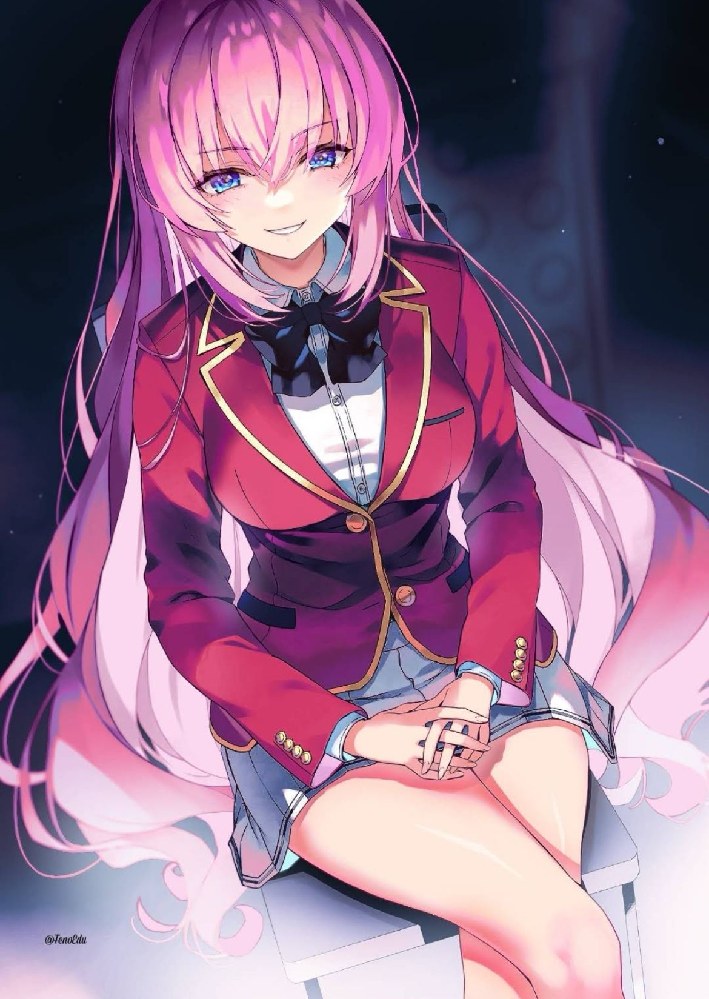
Kouji no es quien dicta la escena, es Honami. No responder era de hecho una estrategia y asi es como por vez primera vemos que la decision de Kouji fue motivado por su curiosidad nuevamente peo sobre todo por las ganas de ver cumplir su deseo.
Solo quería observar de cerca qué tipo de cambios experimentaría como nuevo experimento.
Y Ichinose
era de hecho el sujeto de prueba perfecto para esto.
Ahora ella albergaba un odio hacia mí que superaba
sus sentimientos de afecto.
Cuanto más profundo sea el amor, más fuerte se volverá el odio.
A veces, esto podía llevar a un estado psicológico lo suficientemente importante como para causar una
neurosis, algo que no podía tomarse a la ligera.
Sin embargo, no se puede decir que esto sea un
nuevo experimento.
Aumentar el odio y quebrantar el espíritu: esto se había hecho en experimentos
anteriores con resultados que ya se conocían.
Lo que realmente quería ver era un resultado diferente.
El 1% desconocido.
¿Es esperar demasiado?
Volumen 12.5(23.5) de 2º Año
Ponía unas expectativas en ellas que superaran a Kei, Kei acepto a Kouji en gran medida ignorandolo, en el mismo ruptura ella reconoció no conocerlo bien. Pero Ichinose es diferente, ve a través de él, porque hace lo que hace como piensa y que pretende, está al menos a partir de esa escena, muy por encima de cualquier chica hasta ahora, pero entro en la jugada Hiyori Shina.
Sería mejor si pudiera tomar prestado otro de Raymond Chandler. Al llegar a la sección de Misterio, vi
a una estudiante solitaria. Luchando por alcanzar con sus brazos un libro que está demasiado alto para
su altura. El libro está situado a esta extraña altura donde en un momento parece que ella podría alcanzarlo,
pero que no podría alcanzarlo en el siguiente momento.
Ya que parecía que podría alcanzarlo, ella
tenía dudas en usar el taburete que se le proporcionó.
Supongo que es así ya seas un chico o una
chica.
El libro que ella está tratando de agarrar es “Cumbres Borrascosas” de Emily Bronte.
Es una novela escrita por las hermanas Bronte y es muy conocida en el mundo literario. No, mientras
que la sinopsis por sí sola puede hacer que parezca de misterio, el género real tendría que ser el romance,
¿no es así?
Entonces me acerqué para coger el libro "Cumbres borrascosas", que la chica también
intentaba alcanzar.
—Puede que haya hecho algo innecesario, pero...
En ese momento, me di cuenta
de que reconocía a la estudiante que estaba a mi lado.
—Eres de la Clase C...
Shiina Hiyori.
Era una estudiante que apareció ante nosotros junto a Ryuuen hace un tiempo. Después de mirarme en silencio,
parece que ella también me reconoció.
—Si recuerdo bien, eres... Ayanokouji-kun, ¿verdad?
Preguntó.
Parece que ha recordado mi nombre. Considerando la extraña forma de contacto que hemos tenido entre
nosotros, supongo que era inevitable.
—Sí. Por ahora, aquí lo tienes.
Le entregué el libro.
—Muchas gracias.
—¿Te gustan los libros de Bronte?
—Personalmente, no me gusta ni me disgusta
nada. Pero el libro estaba en una sección incorrecta en cuanto al género, así que solo quería regresarlo
al lugar correcto.
Contestó ella.
Volumen 7 de 1º Año capítulo 2
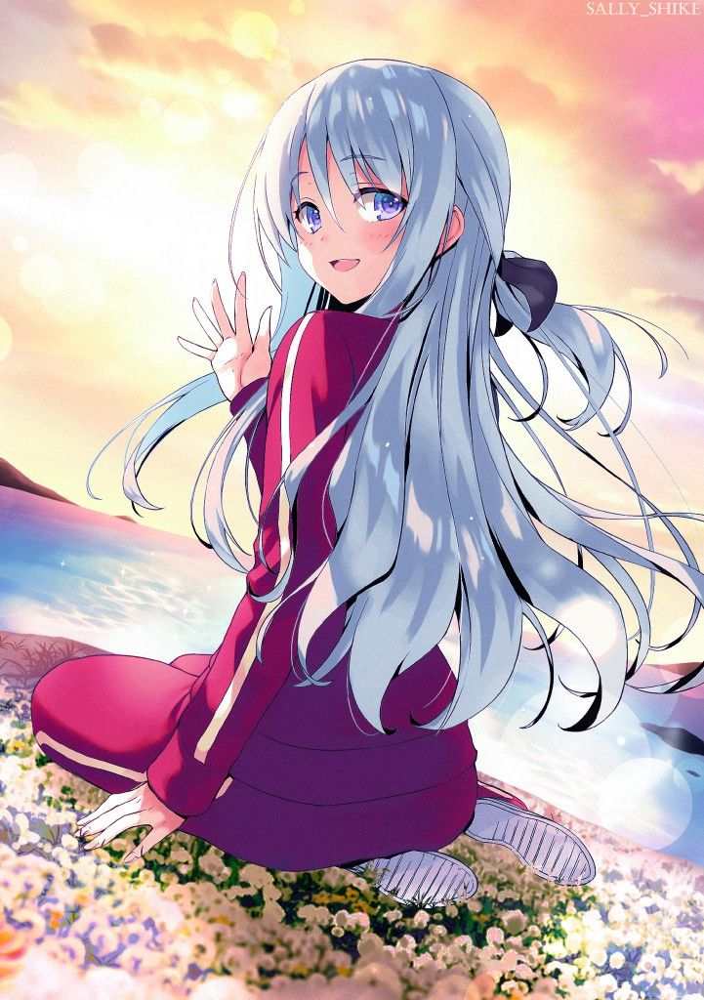
El encuentro de Hiyori con Kouji es el único que no comenzó con una predisposición política, con esto quiero decir hasta hoy cualquier interacción con Kouji de buenas a primeras lo indujo al actuar político.
Conoció a Sudou en un conflicto entre personas, confronto a Horikita de manera más serie en el momento que salieron a la luz los puntos privados, y general la interacción con su clase se basó en usarlos para ganar el examen de la isla. Conoció Ryuuen aplastándolo a Ishizaki, Albert e Ibuki peleando, conoció a Kei en un conflicto de acoso, conoció a Ichinose en un conflicto de examen (examen del zodiaco) incluso anteriores interacción fue netamente casual con el fin del uso entre ambos (La confesión de amor que Ichinose quiso rechazar diciendo que Ayano era su novio).
Siempre hay un conflicto de interés, y en esa se basó toda la primera interacción de Ayanokouji con todos hasta que llego Shina.
Hiyori Shina fue de hecho el único encuentro casual y fortuito, con la cual mantuvo una conversación casual y cotidiana, esta vez una conversación que no involucra ni a la escuela, pues hablan de libros. Esta interacción es más de lo que se piensa, pues hasta ahora estábamos hablando del cambio de objetivo de Ayanokouji y, sin embargo, ignoramos el hecho de que quizás, esa súplica del volumen 11.5 si tenga cabida, pues hay una instancia que se le escapa, una persona que no puede verse sometida a lo fríos y metódicas artimañas del demonio de la cuarta generación.
Estoy seguro de que a Ichinose no le disgustaría ese gesto.
Su personalidad, sus pensamientos, su
cuerpo... No había nada de ella que me desagradara.
Al contrario, era más cautivadora que la mayoría
de las personas que vivían sus vidas sin entusiasmo.
Cuando la miraba, ella me devolvía la mirada
con una sonrisa sincera.
También tenía una gran capacidad para aceptarme, incluso sabiendo parte
de mi oscuridad.
Aun así... Si me preguntaran si en ese momento me sentía atraído por el amor, la
respuesta sería no.
Mis pensamientos se dirigían a otra parte. Volví a aquella tarde en la biblioteca,
que pasé con Hiyori. Volví a la imagen de ella de pie, en silencio, con la flor en las manos.
Era
una atmósfera envuelta en una sensación de felicidad, un sentimiento que nunca antes había experimentado.
Deseaba claramente lo que sentí ese día, en ese momento, una emoción desconocida que nunca antes había
experimentado.
Volumen 2 (25) del 3º Año
No es que le parezca menos ameno la compañía de Honami, sino que esa existencia no es como la de Hiyori cuyo rigor escapa los recintos del control de Kouji. Por vez primera a lado e Hiyori Ayanokoujin no siente la necesidad de tomar control y cuidado, incluí si ahora está con personas como Ichinose que “aceptan su oscuridad” no se compara nada ante esta baja defensa que muestra Ayankouji con Shina.
Todo esto converge, creando este último triángulo amoroso, el cual lentamente engullirá la retorcida visión de amor de Ichinose.
A esto le sumamos la existencia a de Asuka y concretamos este escrito.
La figura de la white room se transforma en 3 escenarios posibles
- Libertad
- Immortalizar en las memorias de las personas
- Cumplir condena
Estos son los escenarios posibles, los cuales solo 2 son viables (al menos en principio) Ayanokouji vive una contradicción constante entre su proyecto a largo plazo, sacrificando bellos momentos cortos que sabe seguro, se arrepentirá de no haber aprovechado.
Aquí está la debilidad de Ayanokoujin Kiyotaka esta debilidad que cierra con broche de oro la existencia de Asuka quien al menos en principio repite este mismo principio de incertidumbre con Hiyori solo que de otra manera muy distinta. Estas dos X no pueden ser controladas ni calladas por desbordar por completo lo que Ayanokoujin en esencia piensa, en efecto esas personas le instan a pensar más allá y fuera de su eficiencia fría y metódica forma de controlar el entorno, de cierta forma lo subordinan de tal manera, que anclan ese pensamiento tan sobre humano en un pensamiento trivial por ej. lo dejan pensando en una rosa trivial en una tarde trivial completamente irrelevante o lo dejan pensando en “nieve”. El punto es que esos pensamientos no son productivos, no son pensamientos de los cuales sacara resultados o ideas útiles y es precisamente por eso que Ayano está tan interesado, pues solo esas personas lo ponen en ese trance, alcanza un estado anímico de felicidad e incertidumbre, pero repleto de calidez humana.
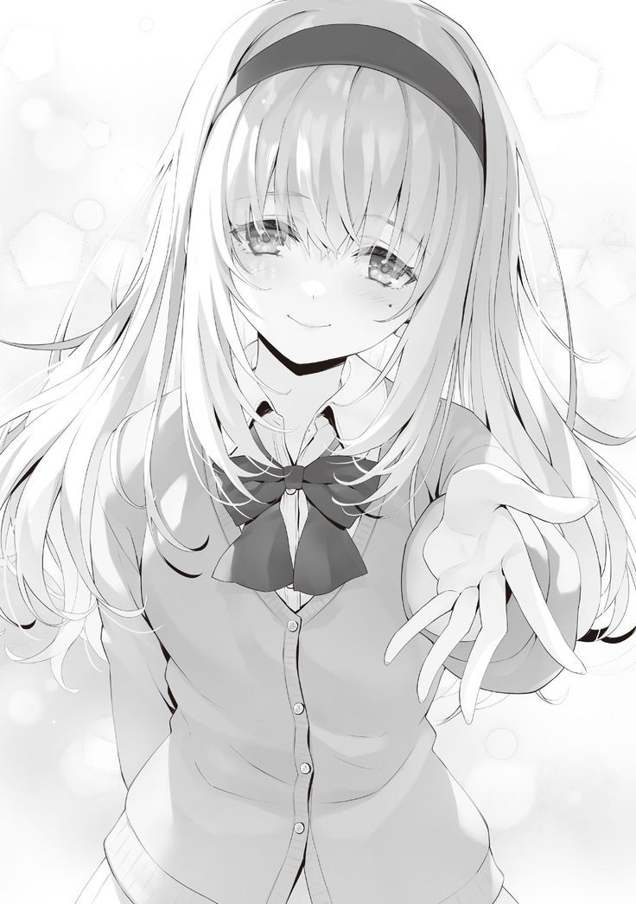
Disertación concisa sobre determinados acontecimientos y personajes
Como se pudo observar, ni mis razonamientos son tan complejos ni la obra tan ambigua, es cuestión de analizar los detalles, entender que el conjunto de tramas no se reducen ni a acontecimientos descriptivistas, ni a conveniencias mal ejecutadas, ni direcciones mal expuesta ni incoherencias explícitas.
Toda la obra de Cote compone una coherencia partiendo de su protagonista y volviendo a él el rol activo que Ayano ejerce en su entorno, también es algo que el entorno hace, en cierto modo el entorno de Ayanokoujin lo absorbió de tal forma que recién muestra estos signos de debilidad, no se trata de un romance de amantes inocuas sino de un desarrollo humano de las relaciones humanas. Despecho, sospecha, engaño, traición, todo un coctel servido de la mano de Kouji quien a su vez cuando cree jugar de manera absoluta como un Dios en su propio mundo o un científico haciendo “experimentos” estos lo comienza a sobrepasar, lo comienzan a “sorprender”.
¿De verdad vale la pena reducir este entramado de diálogos, monólogos, escenas y detalles a una historia jibarizada y absurda de la situación?
¿Por qué los fans ven con malos ojos esto? O bien porque carecen de relacionarse activamente en sus vidas cotidianas y no parecen concebir o siquiera considerar la posible idea de que Ayano consintiera necesitar afecto. Porque casualmente el descontento general y la insatisfacción de algunos particulares se ven reflejados en el segundo año y no en el primero.
La respuesta simple, Ayano dejo de ser Ayano de primer año.
Los acontecimientos lentamente no los envuelve él, ellos son los que envuelven al protagonista, lentamente la imagen difuminada, ambigua y confusa del Ayano de primer año desaparece dejándonos un personaje completamente ambiguo a ojos de quien al menos no ve las capas de constricciones que carga nuestro protagonista.
Contradicciones lógicas, contradicciones sólidas, coherentes y orgánicas. No hay nada inorgánico en el desarrollo de las cosas. Tampoco se estancan, en el mejor de los casos Kinugasa descuida aspectos interesantes, pero lejos de ello no está creando una especie de arbitrariedad de acontecimientos, son acontecimientos sólidos y bien llevados de principio hasta la actualidad.
¿Por qué la necesidad de insultar esta inteligencia? Porque creer que los diálogos que se desarrollan no tienen valor a futuro. Porque intentar reducir la figura de Kinugasa a una excusa de escritor barato con trampantojos tales que podría disimular una inteligencia de quita y pon.
Porque constantemente leo “opiniones” quejándose del rumbo cuando literalmente toda está prácticamente medido para que terminara como está hoy.
Decir lo contrario sería deshonesto, el mayor disgusto (lógicamente quitando al fandom que fechitiza a Honami) en estos últimos meses, fue el escándalo de que Ayanokoujin tuvo al tener relaciones sexuales con Ichinose.
Muchos debatieron este acontecimiento de manera prácticamente infantil, tachándolo de morboso, obsceno, innecesario.. Etc.
Las relaciones sexuales ya son prácticamente explícitas en COTE (recordemos que lógicamente dieron a entender que Ayano y Kei lo habían hecho) así el problema no va por aquí es más bien la molestia de no entender por qué el protagonista hace lo hace, en general con lo mostrado anteriormente ya puedo mostrar que Kouji se subordina Honami y no al revés. Pero incluso si quitamos el contexto o recorrido y figuramos un escenario ficticio en el que ellos 2 terminara haciéndolo sigue siendo igual de coherente o acaso también negaran el hecho de no saber que desde el 11.5 sé sabia que Ayano quería terminar esa relación en un tiempo determinado.
Sin embargo, Ayanokoujin no realiza más daños de los necesarios, podía perfectamente haber sido infiel y ya y seguir con la farsa, pero esto no se trata de que Kouji siente o quiera o pueda, sino de lo que busca.
Ayanokoujin tiene un objetivo y este objetivo involucra una relación profunda con Ichinose Honami, y esto no es una excusa de guion barato de un h#ntai promedio ni un tropo sencillo o truco para dar morbo o satisfacer los sueños húmedos de algunos quienes quieren ver a Ayano sencillamente tener relaciones.
Sea cual sea la situación, las acciones de Kinugasa no son en algún modo impensable, son perfectos acontecimientos que pudieron predecirse. La queja burda, tosca y pueril de algunos en querer reducir estos acontecimientos a meros tramos morbosos es inválida e incluso en primer lugar plantear esto es insultar a la obra, y en mayor medida es insultar a la inteligencia de Kinugasa.